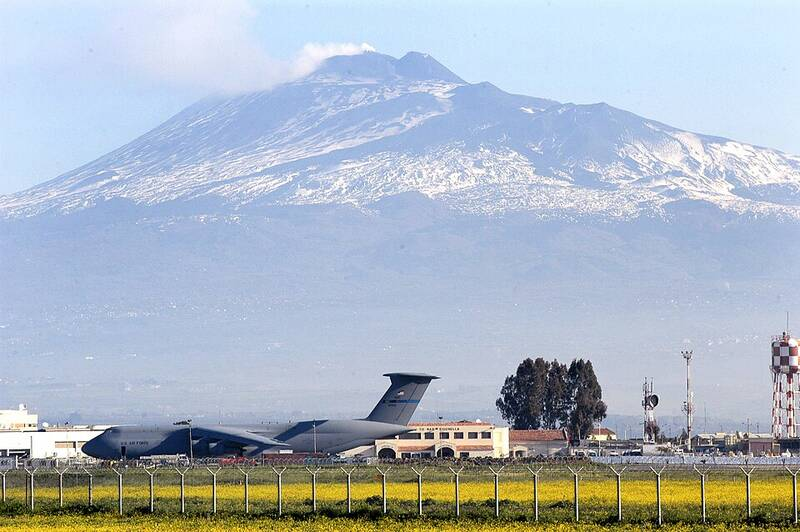

NAS Sigonella
Sicily, Italy

A U.S. Navy air station in Sicily, supporting operations across the Mediterranean. 1
Open in the interactive Watcher
Sources
- Naval Air Station Sigonella Wikipedia
Sicily, Italy

A U.S. Navy air station in Sicily, supporting operations across the Mediterranean. 1
Open in the interactive Watcher